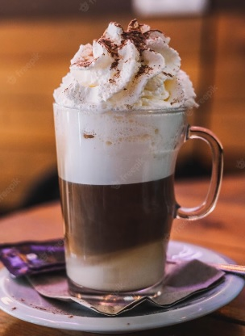

Capuccino
Capuccino
¿Qué es el capuccino?
El capuchino (del italiano cappuccino a su vez del alemán kapuziner) es una bebida nacida en Austria, preparada con café expreso y leche montada con vapor para darle cremosidad. Un capuchino se compone de 125 ml de leche y 25 ml de café expreso, en ocasiones se agrega cacao en polvo o canela según el gusto del consumidor. La característica del capuchino se la da el café expreso, la textura y temperatura de la leche, ya que esta no debe pasar de los 65 °C. La técnica del barista para dar volumen a la leche es introduciendo, por medio de vapor a presión, minúsculas burbujas de aire que le otorgan una textura cremosa.
Cuál es el origen del capuccino?
Es en Viena que encontramos por primera vez en el siglo xviii una bebida de café con leche llamada Kapuziner ("capuchino" en alemán). Fuera de la capital austríaca era conocido como café viennois (café vienés) El capuchino toma su nombre del color del hábito de los frailes capuchinos (cappuccio significa "capucha" en italiano), o tal vez es del aspecto de su tonsura (un círculo de piel blanca rodeado por un aro de cabello marrón). Según la leyenda, después de la Batalla de Viena de 1683, los vieneses prepararon café usando los sacos abandonados por los turcos y, para suavizar su fuerte sabor, añadieron crema y miel, obteniendo un color similar al del hábito de los capuchinos. La bebida siempre ha sido conocida por su nombre italiano, ya que la máquina de café expreso con la que normalmente se hace es un invento patentado en 1901 por Luigi Bezzera en ese país.
Preparación
El capuchino se prepara normalmente con una cafetera expreso, las versiones profesionales de estas máquinas extraen el café y disponen además de una boquilla por la que obtiene el vapor de agua que el barista se encarga de introducir en la leche fría para calentarla a unos 65 °C de temperatura al tiempo que el vapor crea pequeñas burbujas. El resultado es una capa de espuma gruesa, que debe ser compacta y persistente, y le da al capuchino su característica textura aterciopelada. En ocasiones se agrega cacao en polvo o canela según el gusto del consumidor.